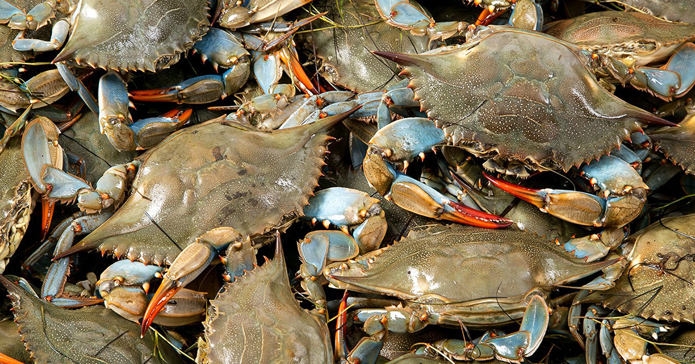

- Crab
| Scientific name | Brachyura |
|---|---|
| Habitat | Crab can be found in any body of water, including salt and fresh water and some species of crab are able to survive on land. |
| Diet | primarily on algae, and taking any other food, including molluscs, worms, other crustaceans, fungi, bacteria, and detritus. |